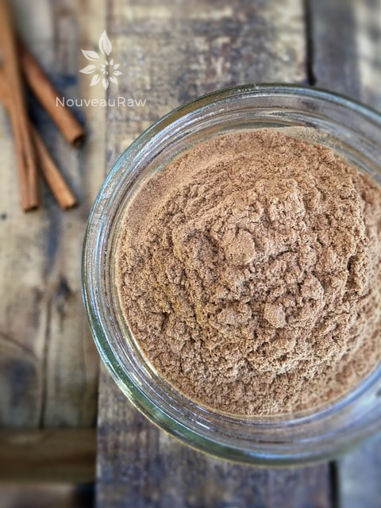

Cinnamon – All spices are not created equal
 Did you know that there are different types of cinnamon? I never really gave it any thought, until now.
Did you know that there are different types of cinnamon? I never really gave it any thought, until now.
As of late, I have been eating it daily. Craving is more like it so I had to do some research on it to see just what the heck “my body” knew that I didn’t. But before I delve into the health benefits of cinnamon I want to point out that there is a huge difference in flavor when it comes to different cinnamon’s.
So before you measure out a teaspoon worth to add to your recipe, stop and double-check the taste of it. I have come to learn firsthand that one may offer a sweet, delicate flavor and another can have a hot, spicy flavor. This could really alter the overall flavor of your recipe!
The two most common cinnamons:
- Ceylon cinnamon (my favorite) – True cinnamon has a lighter, sweeter, and more delicate flavor. This cinnamon has a more delicate and complex flavor, with citrus, floral, and clove notes. Ceylon cinnamon is sometimes called true cinnamon. It is more expensive. Ceylon cinnamon is pale in color.
- Cassia cinnamon is also known as Chinese, Saigon, and Korintje cinnamon is less expensive than the true cinnamon and perhaps spicier and more pungent. It is therefore preferred in exotic meat dishes, curries, and other savory foods. These cinnamon varieties have a stronger, more intense, and often hotter flavor than Ceylon cinnamon due to an increased percentage of cinnamaldehyde, up to 5-6% by weight. It has a darker color. Cassia cinnamon, the kind of cinnamon normally found in grocery stores and in supplement form, naturally contains a compound called coumarin. Coumarin is also found in other plants such as celery, chamomile, sweet clover, and parsley.

How to identify Cassia vs. Ceylon
American labeling laws do not require a distinction to be made between cassia and Ceylon cinnamon in the retail market, however, the overwhelming majority of ground cinnamon found within the United States is a variety of cassia.
Cinnamon and cassia sticks, however, have obvious visual markers which make them easy to identify:
- cassia is dark, reddish-brown whereas Ceylon cinnamon is light tan in color
- cassia sticks form a “double-scroll” whereas Ceylon cinnamon appears rolled like a cigar
- cassia is thick and hard whereas Ceylon cinnamon is thin and brittle
Which tastes better?
The choice between cassia or Celyon depends on the intended use and taste preference of the individual. Cassia cinnamon is more popular in the United States where its flavor is associated with hot, spicy cinnamon candy while Ceylon cinnamon gains popularity in Latin American countries where it is a key ingredient in Mexican style hot-chocolates. Cassia is also an ingredient in Chinese five-spice.
- People taking diabetes medication or any medication that affects blood glucose or insulin levels shouldn’t take therapeutic doses of cinnamon unless they’re under a doctor’s supervision. Taking them together may have an additive effect and cause blood glucose levels to dip too low.
- Also, people who have been prescribed medication to manage their blood sugar should not reduce or discontinue their dose and take cinnamon instead, especially without speaking with a doctor. Improperly treated diabetes can lead to serious complications, such as heart disease, stroke, kidney disease, and nerve damage.
- At high levels, coumarin can damage the liver. Coumarin can also have a “blood-thinning” effect, so cassia cinnamon supplements shouldn’t be taken with prescription anti-clotting medication, such as Coumadin (warfarin), or by people with bleeding disorders.
- Cinnamon can also be found in a concentrated oil form that comes from cinnamon bark. Some of these products are not intended for consumption but instead are used for aromatherapy essential oils. Also, the oil is highly potent and an overdose can depress the central nervous system. People should not take the oil to treat a condition unless under the close supervision of a qualified health professional.
- Pregnant women should avoid excessive amounts of cinnamon and shouldn’t take it as a supplement.
Shelf Life:
- Just like with other dried spices, try to select organically grown cinnamon, since this will give you more assurance that it has not been irradiated (among other potential adverse effects, irradiating cinnamon may cause a significant decrease in vitamin C and carotenoid content).
- Cinnamon should be kept in a tightly sealed glass container, in a cool, dark, and dry place.
- Ground cinnamon will keep for about six months, while cinnamon sticks will stay fresh for about one year stored this way. You can also extend their shelf life by keeping them in your refrigerator.
Health benefits:
Cinnamon is antimicrobial and also restrains the growth of fungi and yeast, making it potentially useful in the treatment of allergies. Cinnamon also holds promises for people with diabetes, because it appears to stimulate insulin activity thereby helping the body to process sugar more efficiently. You see, that cinnamon roll may not only taste good but be good for you, too!. There have been recent studies on Cinnamon suggesting their usage for blood sugar control. Paul Crawford ([email protected]) has done work on the effectiveness of Cinnamon.
Cinnamon has been used around the world for many medical conditions. Here are some examples I found on the web:
- Common Cold: Cinnamon powder boiled in a glass of water with a pinch of black pepper powder and honey has been used to treat sore throat, malaria, influenza, and cold.
- Digestive Disorders: A tbsp of cinnamon water, prepared as for cold and taken 1/2 hour before meals can relieve flatulence and indigestion.
- Bad Breath: Cinnamon serves as a good mouth freshener.
- Acne: Paste of cinnamon powder prepared with few drops of fresh lime juice can be applied over pimples and blackheads for beneficial results.
- Healing Power and Curative Properties: Cinnamon prevents nervous tension, improves complexion and memory. A pinch of cinnamon powder with honey does the trick if taken regularly every night for these purposes.
- Other Diseases: Cinnamon is highly beneficial in the treatment of several other ailments, including spasmodic afflictions, asthma, paralysis, excessive menstruation.
© AmieSue.com